My placement in the iNN was the best four months of my career. Our team was wholly accountable for our outputs and how we got there. If anything wasn’t working, it was up to us to change. That's what innovation means to me – an openness to trying new things, reflecting on the good and the bad, and continuing to iterate.
I think with the right mindset, any team can be innovative. It's as simple as being open, honest, and iterative — continuous improvements compound into highly effective and highly fulfilled teams.
An innovative team is an empowered team.
I want to bring that sense of empowerment to as many of our people as I can. To me, that's what supporting and evolving our global innovation program means. Each of these innovation initiatives (Ideaswell, the iNN, the Rapid Prototyping Team) – every single one of those help empower our people. And I want to be a part of that.
Furthermore, I want to work with a diverse, international team — that’s when I do my best work. During the iNN, I took great pleasure in building a better understanding of Protiviti, meeting and working with a broader variety of stakeholders, and getting to facilitate innovation both internally and externally. I see this role as an opportunity to extend those activities and continue to expand my network, my skillset and my reach.
I enjoy chipping away at complex problems. I thrive in a collaborative environment. And I find fulfilment in empowering those around me — that's why I want this role. And that's why I would make an excellent Innovation Delivery Lead.
Who am I?
Diverse teams are a key ingredient for innovation. I like to think this is true at the microscale as well.
While my CV provides an overview of my diverse work competencies and experiences, I also wanted to draw
attention to some of my experiences outside of work.
Programming
I recently taught myself to program and build increasingly complex websites.
This demonstrates my drive, autonomy, and problem-solving abilities.

Writing
Writing short stories and redrafting novels again and again has taught me determination,
communication, and the importance of listening to people's stories.
Travelling
Two years of backpacking around the world has taught me how to empathize and communicate
with people from all walks of life.
Hiking
Hiking for two weeks through the Himalayas while battling a nasty parasite has taught
me that determination pays dividends.

Diving
Lastly, spending three months as a dive guide in Borneo has taught me that through patience,
understanding, and listening, you can empower people to accomplish a lot more than they might believe.
Can I faciliate change?
Recently, on the iNN, we were struggling to make sense of our Use Case: "How might we optimize the end-to-end
client experience?" It felt intangible. We had been speaking to our clients, but we had no way to analyze our
client’s stories - how could we translate their experiences into digestible data?
Through rumination, iteration, and some design thinking, a teammate and I came up with a potential solution.
But as I'm sure you know, you can't simply foist a solution on other people and expect it to work.
Often, building support for an idea is the most difficult part of execution. I find that the easiest way to
do this is to create a sense of shared ownership.
We presented our potential approach to our teammates and asked for their input and feedback. We asked them
to take it away and test the idea. Before long, the idea became our team’s idea, rather than any single
person's. More than that, though, it had the opportunity to grow. By building support and inviting
collaboration, we were able to make sense of our clients' stories. And our entire team had a much more
rewarding iNN experience because of it.
Support for change has to be built. Change should continue to develop as more people come on board.
Influencing and persuading clients and stakeholders has more to do with listening than telling.
That's what makes me an effective facilitator of innovation and change.
Will I get things done?
I'm hoping, that by this point, it's clear that I'm driven. I've taught myself to program,
I'm constantly challenging myself to learn new skills and I've been highly effective in each of my
roles. However, to really drive this home, I want to draw attention once again to my experience
in the iNN.
My Use Case team was predominantly based in the US. While I woke up early each day to maximize our team’s time
together, it meant that I was the only one online for half of the day. It meant I had to be resourceful in
determining how to best handover my work when my colleagues were asleep (hint: video recordings are often
better than email). But most of all, it gave me a great opportunity to demonstrate and hone my ability to
work independently.
During this time, I co-designed a method to convert interview responses into rich, digestible data points.
I led the charge in developing, testing and refining a prototype application to bring our client's experiences
to life. And I used my programming experience to automatically analyze and tag each of our interview
observations into useful themes.
I eliminate distractions, I hold myself accountable and I derive great joy from delivering high quality work.
I will apply the same determination and resourcefulness to the role of Innovation Delivery Lead.
I will make the most of every opportunity to collaborate and apply my ability to conduct deep work
and exceed expectations.
Am I passionate about innovation?
Yes.
But seriously, I'm at my best when I'm creative. The problem is - innovation is difficult in isolation.
It took me five redrafts of a novel before I learned that lesson.
Creativity flows best with company.

So really, I'm at my best when I'm creative and collaborative.
I facilitate design thinking sessions with friends in my spare time! The minute we started applying Scrum, I read three books and overenthusiastically shared these insights with my team. I gave such a passionate presentation about my experience on the iNN to my local team that my manager said it was the best team meeting we’d had in months.
Uh yeah… I’m kind of passionate about innovation.
How will I deliver our Innovation Program from the other side of the world?
While this is a global role, a decent portion of our innovation team are based in the United States. I view this as more of an opportunity than a challenge.
As a morning person, I would be happy to start the day at 4:30am (1:30pm Eastern Standard Time).
That would give me half of the working day to collaborate with our North American innovation team,
stakeholders and clients. It would also give me half of the day to focus on delivering Protiviti's Innovation Program. As demonstrated by my performance during the iNN and
the success of our Use Case team, I believe this to be a winning formula.
* * *
I would also like to note my willingness to travel.
While Protiviti-sanctioned international travel
is currently on hold due to the pandemic, I recently submitted a Global Mobility Application to transfer
to the United States. If there is a preference for the successful applicant to be based in North America,
I would be more than willing to make the move.